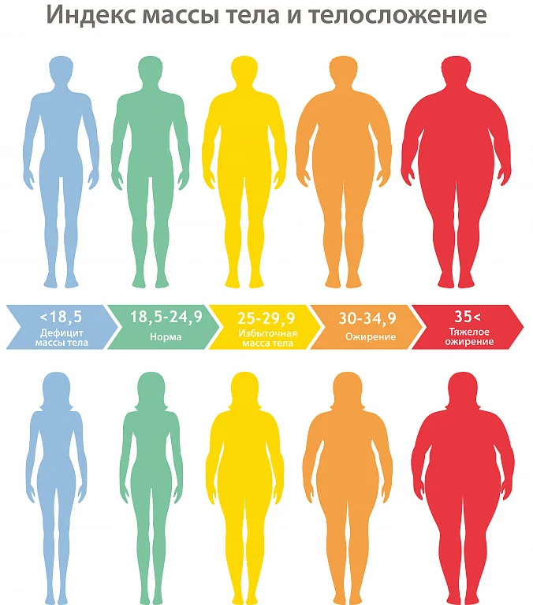

Индекс массы тела (ИМТ) является одним из наиболее распространенных и широко используемых показателей оценки веса человека относительно его роста. Этот показатель играет важную роль в определении степени подверженности человека избыточному весу или ожирению, а также в принятии мер по поддержанию здоровья и профилактике связанных с этим заболеваний.

Индекс массы тела - это числовой показатель, который рассчитывается путем деления массы тела (в килограммах) на квадрат роста (в метрах). Формула расчета ИМТ выглядит следующим образом:
Классический индекс массы тела рассчитывается по формуле:

где:
и измеряется в кг/м².
Согласно формуле, ИМТ - это величина, позволяющая оценить степень соответствия массы человека его росту и тем самым косвенно судить о том, является ли масса недостаточной, нормальной или избыточной.
В соответствии с рекомендациями ВОЗ разработана следующая интерпретация показателей ИМТ.
Интерпретация ИМТ:| Индекс массы тела | Соответствие между массой человека и его ростом |
|---|---|
| 18,5 и менее | Недостаточная (дефицит) масса тела |
| 18,5—24,9 | Норма |
| 25—29,9 | Избыточная масса тела (предожирение) |
| 30—34,9 | Ожирение 1 степени |
| 35—39,9 | Ожирение 2 степени |
| 40 и более | Ожирение 3 степени |
Помимо классической формулы существуют усовершенствованные формулы для расчета индекса массы тела с учетом пола и возраста.
Данные формулы используются в разделе Расчеты → Индекс массы тела приложения.
Индекс массы тела (ИМТ) является важным индикатором, который помогает определить, находится ли ваш вес в соответствии с вашим ростом. Этот параметр играет важную роль в оценке вашего общего здоровья и может служить ранним предупреждением о потенциальных рисках для вашего организма.
Избыточный вес и ожирение: Иметь избыточный вес или столкнуться с ожирением связано с увеличенным риском развития серьезных заболеваний. Сердечно-сосудистые заболевания, такие как артериальная гипертензия (высокое кровяное давление), атеросклероз (отложение жировых отложений на стенках артерий) и инфаркт миокарда, часто ассоциируются с избыточным весом. Другие заболевания, такие как диабет 2 типа, суставные проблемы и некоторые виды рака (например, рак молочной железы, рак толстой кишки), также связаны с ожирением.
Недостаточный вес: Недостаточный вес также может повлиять на ваше здоровье. Недостаточное питание и низкая масса тела могут увеличить риск ослабления иммунной системы, остеопороза (разрушение костной ткани) и других заболеваний, связанных с недостатком витаминов и минералов.
Важно понимать, что ИМТ - это всего лишь один из многих параметров, которые влияют на ваше здоровье. Ваш образ жизни, питание, уровень физической активности, генетическая предрасположенность и общее состояние организма также играют важную роль.
Если ваш ИМТ находится в пределах нормы, это не означает, что вы абсолютно защищены от заболеваний. Он всего лишь указывает на то, что у вас нет явных признаков избыточного веса или недостаточного питания. Поэтому важно вести здоровый образ жизни в сочетании с регулярными медицинскими обследованиями для полной оценки вашего здоровья.
В конечном итоге, забота о здоровье требует комплексного подхода. Регулярные физические упражнения, сбалансированное питание, управление стрессом и поддержание позитивного образа мышления - все это важные аспекты, которые помогут вам поддерживать оптимальное здоровье на протяжении всей жизни.
Индекс массы тела (ИМТ) предоставляет полезную информацию о соотношении между массой тела и ростом, однако у него есть некоторые ограничения, которые важно учитывать при интерпретации его результатов.
1. Неучет распределения жира: ИМТ не учитывает распределение жира в организме. Локализация жира имеет большое значение: некоторые люди могут иметь более высокий ИМТ из-за жировых отложений в области живота (центральное ожирение), что связано с более высоким риском для здоровья, чем жировые отложения в других областях тела.
2. Неучет мышечной массы: ИМТ не различает между мышечной массой и жировой массой. У спортсменов и людей с развитой мускулатурой ИМТ может показаться повышенным, хотя их процент жира может быть низким. Это может привести к неверной оценке степени их здоровья.
3. Особенности телосложения: ИМТ не принимает во внимание индивидуальные особенности телосложения. У некоторых людей естественно более крупная или более хрупкая физическая структура, что может повлиять на их ИМТ.
4. Заболевания и состояния: Некоторые медицинские состояния, такие как отеки или опухоли, могут влиять на вес и искажать результаты ИМТ.
Важно помнить, что ИМТ - это лишь инструмент, а не окончательный диагностический индикатор. Он предоставляет общую оценку вашего веса по отношению к росту, но не учитывает множество факторов, влияющих на здоровье. Поэтому, при оценке своего здоровья, рекомендуется обращаться к врачу, который может использовать ИМТ в сочетании с другими данными и обследованиями для более точной оценки вашего состояния и рисков.
Следить за своим ИМТ - это лишь одна часть заботы о здоровье. Важно учесть и другие факторы, такие как образ жизни, питание, уровень физической активности, генетическая предрасположенность и индивидуальные потребности организма. Регулярные физические упражнения, сбалансированное питание и регулярные медицинские обследования также важны для поддержания оптимального здоровья.
Индекс массы тела - это полезный инструмент для предварительной оценки веса и его соотношения к росту. Однако он не является единственным показателем здоровья. Лучше всего консультироваться с врачом, чтобы получить всестороннюю оценку вашего здоровья и разработать план поддержания оптимального образа жизни.